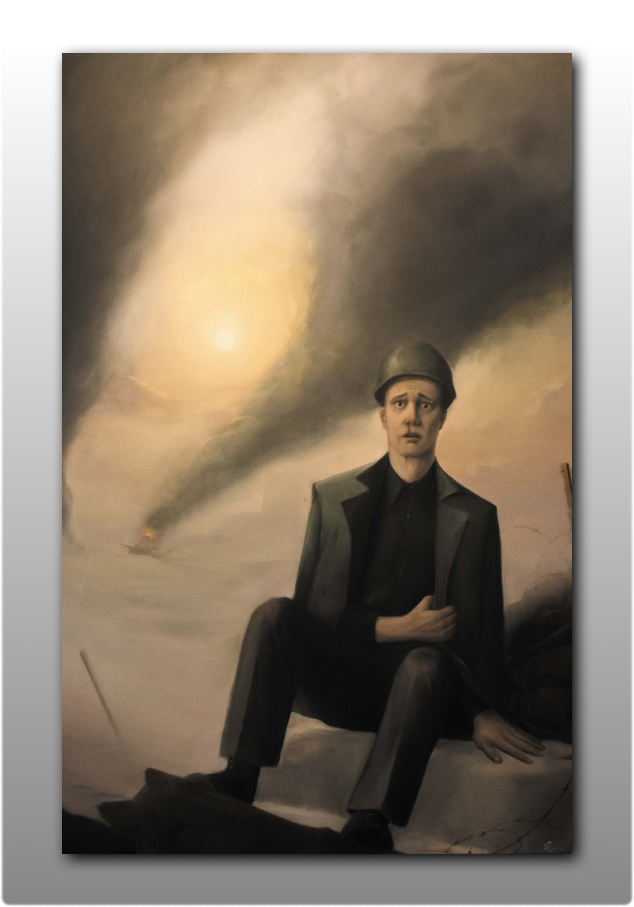
II. Satz Teil 1. Diptychon aus der Serie "Krieg" - Mama, Papa, Bruder 200x130cm (2020)
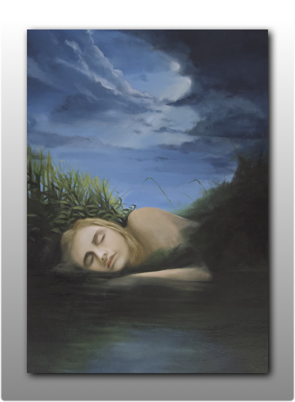
September, 100 x 70 cm, 2019
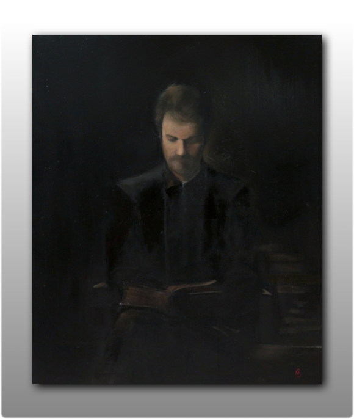
Hans, 120 x 100 cm, 2018
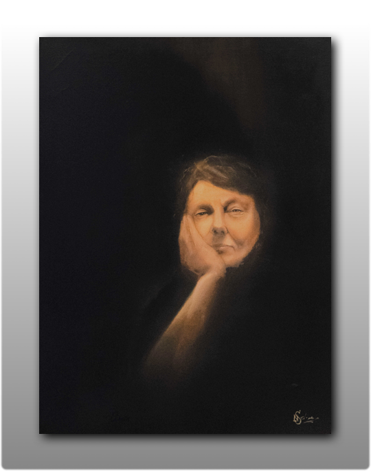
Oma, 100 x 70 cm, 2018
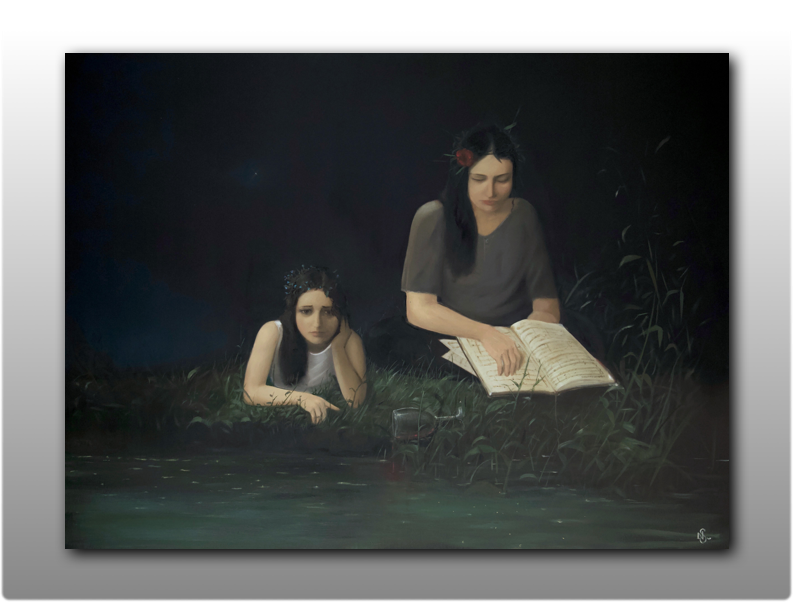
Vater, 190 x 143 cm, 2017
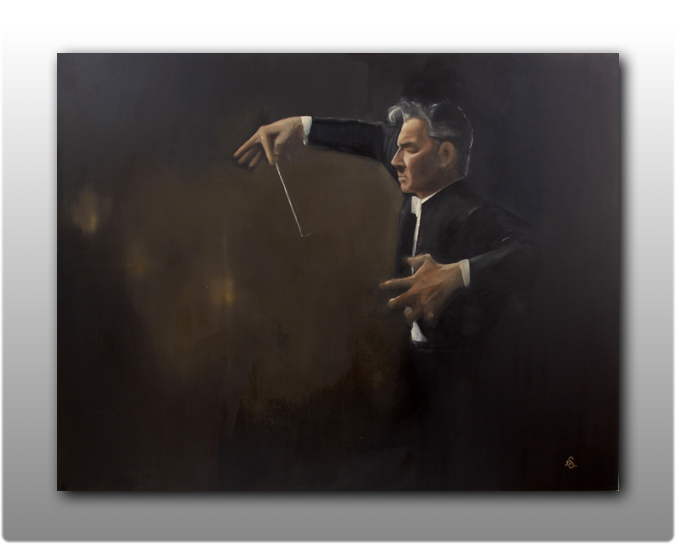
Karajan, 190 x 160 cm, 2016
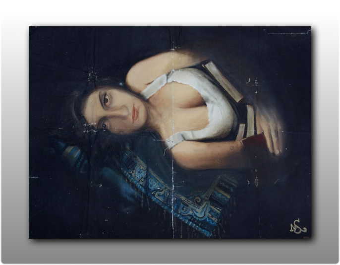
JMR, 100 x 80 cm, 2014
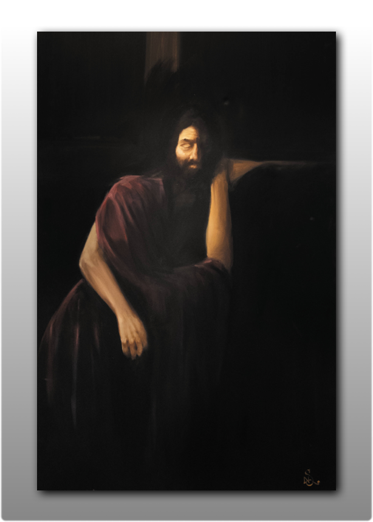
Stabat Mater, 160 x 100 cm, 2013
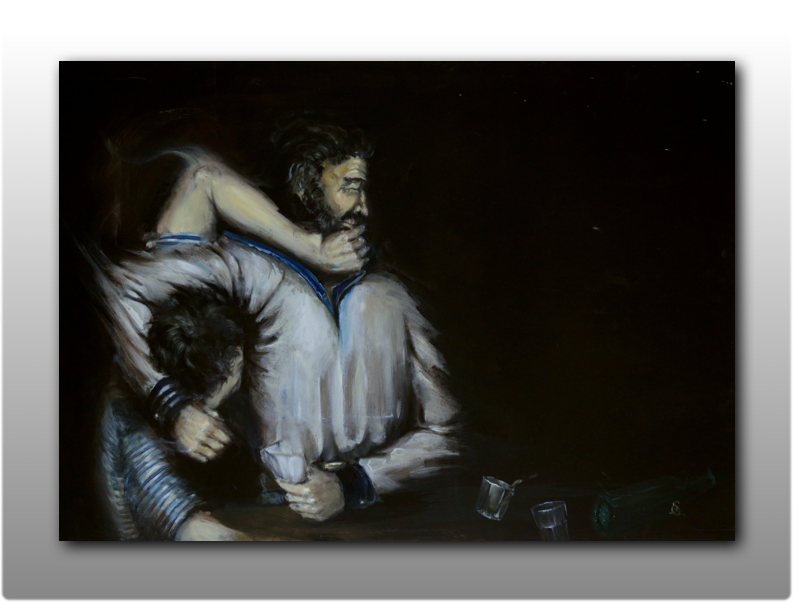
Matrosen, 170 x 120 cm, 2011
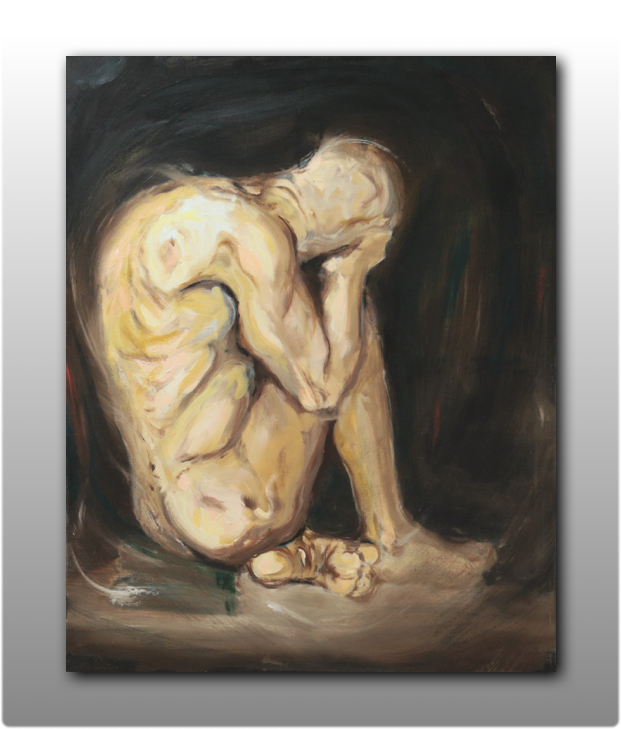
Denker, 100 x 80 cm, 2011
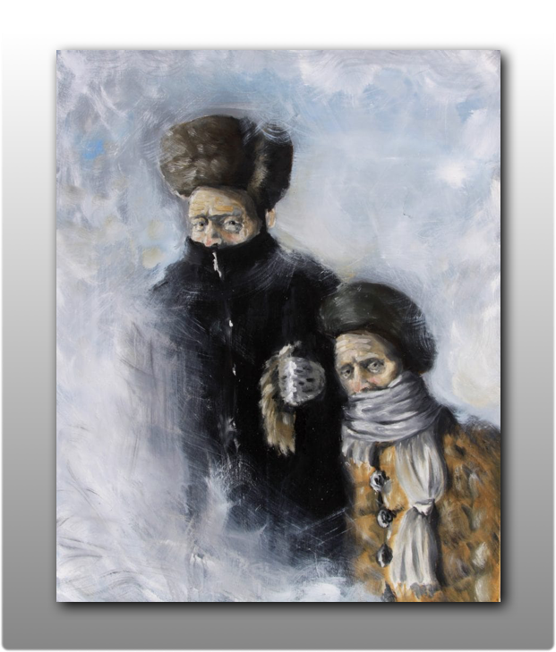
Metel, 100 x 80 cm, 2011
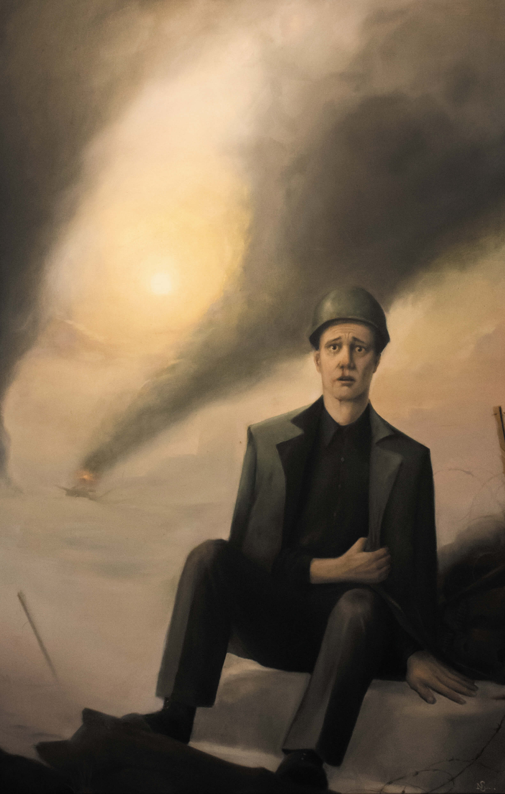
II. Satz Teil 1. Diptychon aus der Serie "Krieg" - Mama, Papa, Bruder 200x130cm (2020)
Serie "Krieg"
Zur Zeit arbeite ich an einer Serie, angelehnt an die Form der Sinfonie in der klassischen Musik. Die Serie lässt sich, wie eine Sinfonie (meistens) in 4 Sätze einteilen:
I. Satz
Größte thematische Dichte - Ouvertüre, Vorstellung der Thematik und einzelner Motive.
II. Satz
Langsame und intime Bearbeitung. Einzelschicksale. An diese Stelle kommt ein Diptychon an dem ich zur Zeit arbeite.
III. Satz
Ein kleines Intermezzo. Etwas erheiternd.
IV. Satz
"Großes" Finale. Allumfassender Abschluss.
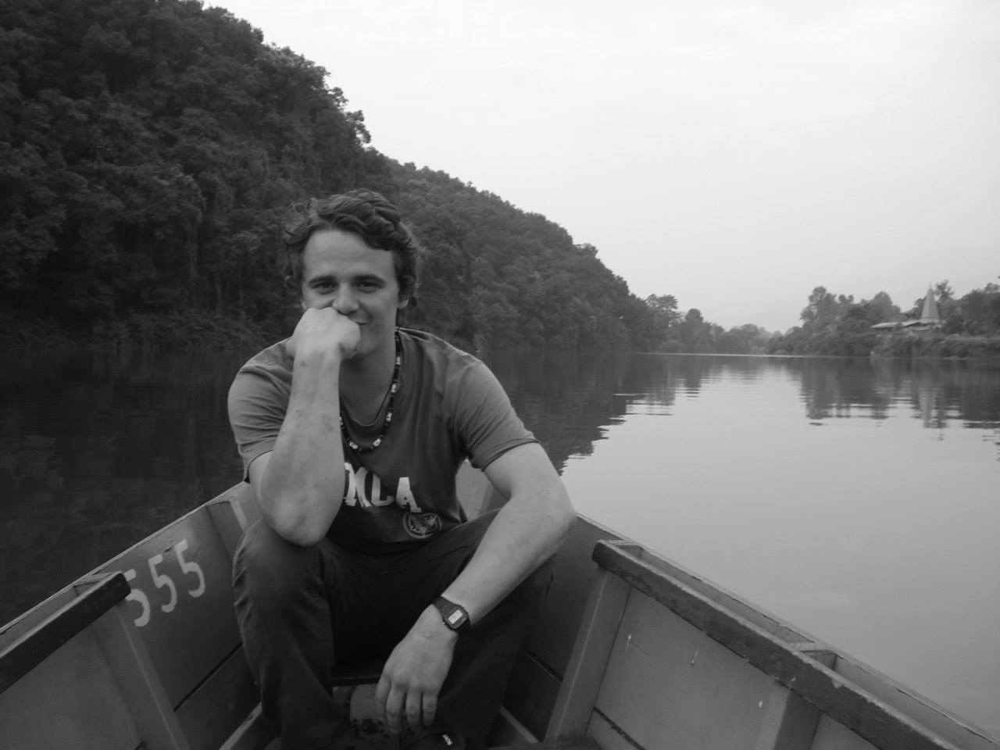
Geboren wurde ich im russischen Sankt Petersburg, lebe jedoch seit meinem zehnten Lebensjahr in Berlin. Bereits als kleiner Junge zeichnete und malte ich leidenschaftlich gerne. Meine Mutter war bemüht diese Leidenschaft früh zu fördern und meldete mich zu verschiedenen Kursen und Zirkeln an. Leider konnte ich weder in Russland noch in Berlin einen Zugang zu den Veranstaltungen finden. Mich dem Malen anhand von vorgegebenen Aufgabenstellungen und Richtlinien zu nähern, hat sich für mich als Einschränkung der freien Entfaltung meiner Kreativität angefühlt und ließ mich nach und nach den Spaß an der Sache verlieren.
Es folgten emotionale Jahre der Pubertät geprägt von Selbstfindung und Rebellion. Künstlerisch identifizierte ich mich mit verschiedenen Strömungen der Streetart. Der Bruch mit gesellschaftlich akzeptierten künstlerischen Normen, sowie das ständige Streben nach Innovation, waren Aspekte die mich faszinierten. Ich durchlebte sowohl persönlich als auch künstlerisch eine intensive Jugend.
Mit Anfang 20 zog es mich mit dem Auszug aus dem Elternhaus zurück zu „klassischeren“ Methoden. Ich entdecke die Ölmalerei für mich und begann plötzlich eine Leinwand nach der anderen zu bemalen.
Einhergehend mit der neu erweckten Leidenschaft entwickelte ich ein tiefes Interesse für das Schaffen alter Meister. Die Dramatik der Chiaroscuro-Malerei, sowie die Seriosität sakraler Malerei hinterließen einen immensen Eindruck auf mich.
Den größten Einfluss auf meine Bilder hat jedoch die klassische Musik. Als junger Erwachsener stieß ich zufällig auf ein Stück, das ich aus meiner Kindheit kannte. Das Hörerlebnis hinterließ in mir ein emotionales Empfinden, welches mir in seiner Vehemenz vorher in Verbindung mit jeglicher Art von Kunst unbekannt war. Es entwickelte sich zu meiner bedeutendsten Inspirationsquelle und manifestierte sich in dem Anspruch, bei der Fertigstellung eines Werkes ein Gefühl mit der selben Intensität zu spüren.
Für die Umsetzungen benutze ich nur wenige Skizzen für ein Grundgerüst und grundsätzlich keine Fotografien. In meinen Augen beraubt jegliches Abzeichnen von Momentaufnahmen das Bild an Dynamik und Wirklichkeit. Ich kratze das Bild aus dem Kopf auf die Leinwand. In diesem Prozess ändert sich Vieles, durch Zufall oder neue Einfälle – am Ende dient alles dem Motiv und seiner emotionalen Welt.